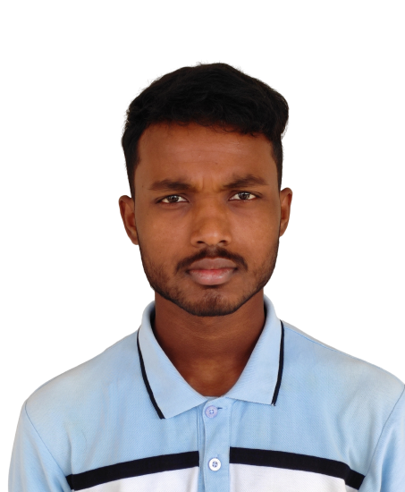

|  |
AVAJIT KUMAR KEWRATmandalavijeet12@gmail.com|Biratnagar|Nepal |
Enthusiastic and dedicated B.Tech Computer Science student with a strong foundation in software development and computer systems. Proficient in programming languages such as Java, Python, C and experienced in specific areas, e.g., web development, database management. Adept at problem-solving and algorithm design, with a keen interest in exploring emerging technologies. Proven ability to work effectively both independently and collaboratively, as demonstrated through mention relevant projects, internships, or group work. Eager to leverage academic knowledge and practical skills to contribute to innovative projects and drive technological advancements. Seeking opportunities for professional growth and hands-on experience in the dynamic field of computer science.
Currently I Have No Working Experience But I Have Good Skills On Above Topics.
Location: Rangeli, Nepal
Certificate Result: 3.20 GPA out of 4
Location: Biratnagar, Nepal
12th Grade Result: 3.27 GPA out of 4
Location: Gujarat, India
Currently Pursuing: B.Tech in Computer Science Engineering.